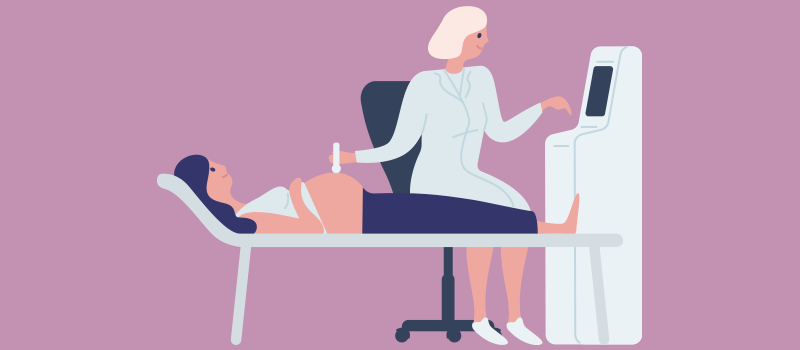

Obstetrics and Gynecology
Obstetrics and Gynecology (OB-GYN) is a medical specialty that focuses on the care of women during pregnancy and childbirth, as well as disorders of the female reproductive system.
Common Women's Health Concerns
- Hypertension
- Heart Disease
- PCOS (Polycystic Ovary Syndrome)
- Endometriosis
- Breast Cancer
- Gynecological Infections
Hypertension: Women may develop high blood pressure during pregnancy or due to hormonal changes. It's important to monitor blood pressure regularly and maintain a healthy lifestyle.
Heart Disease
Heart disease remains the leading cause of death among women. Recognizing early signs like fatigue, shortness of breath, or chest discomfort is key to early intervention and treatment.
Gynecological Health
This includes menstruation problems, pelvic pain, and fertility issues. Regular gynecological exams help detect early signs of infections, cysts, or cancer.
Polycystic Ovary Syndrome (PCOS)
PCOS affects hormone levels, leading to irregular periods, infertility, and weight gain. Early diagnosis and lifestyle changes can improve outcomes.
Endometriosis
A painful condition where tissue similar to the uterine lining grows outside the uterus. Treatments range from pain relief to surgical options.
Breast Cancer

Early detection through mammograms and self-exams can save lives. Know the warning signs like lumps, nipple discharge, or changes in breast shape.
When to See an OB-GYN
It's recommended to have an annual visit to your gynecologist, or more frequently if you're experiencing abnormal symptoms like pelvic pain, unusual discharge, or missed periods.